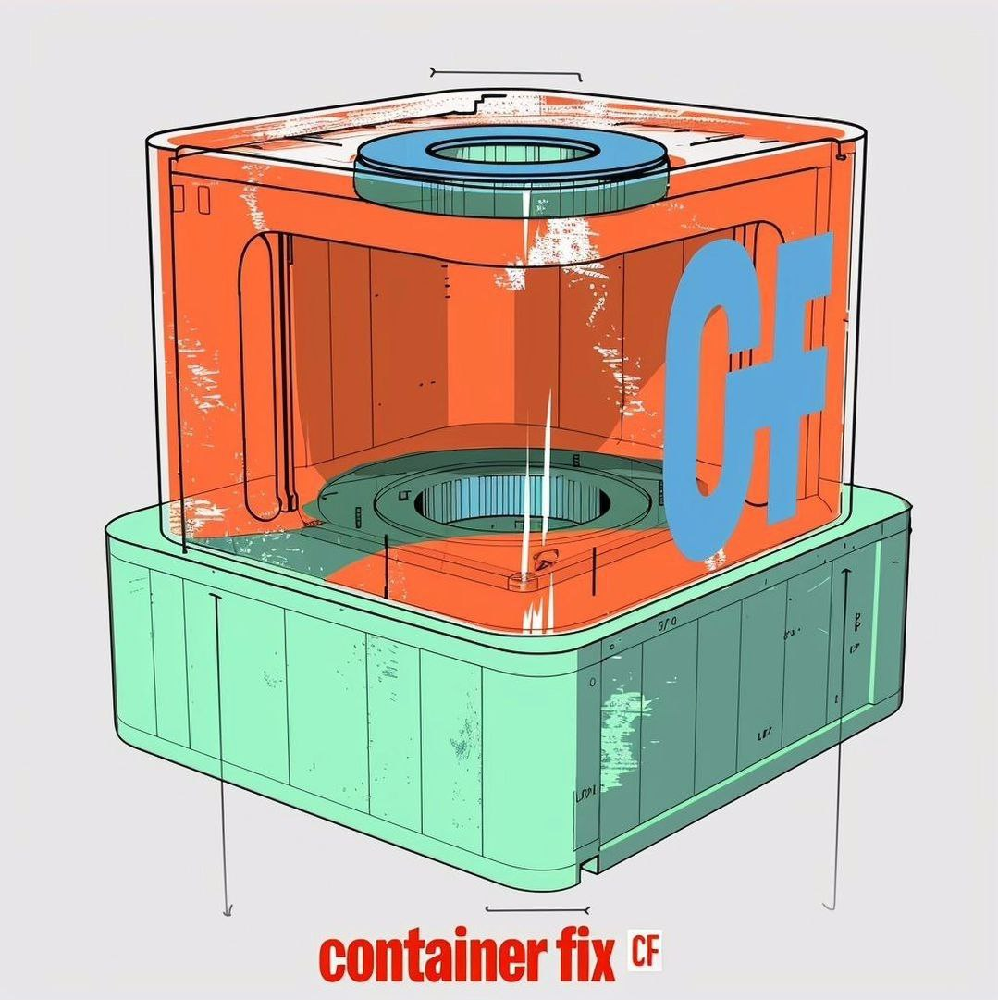
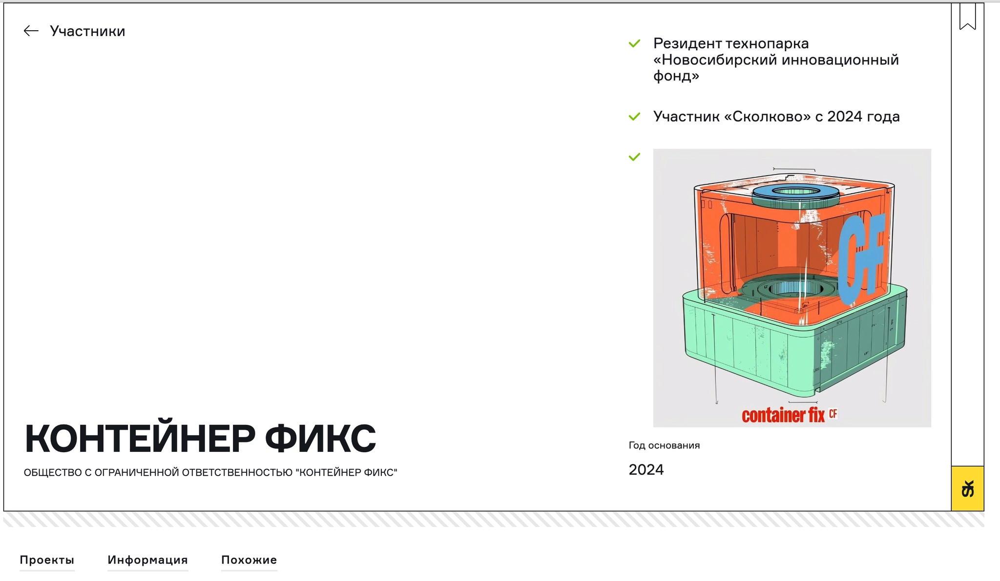
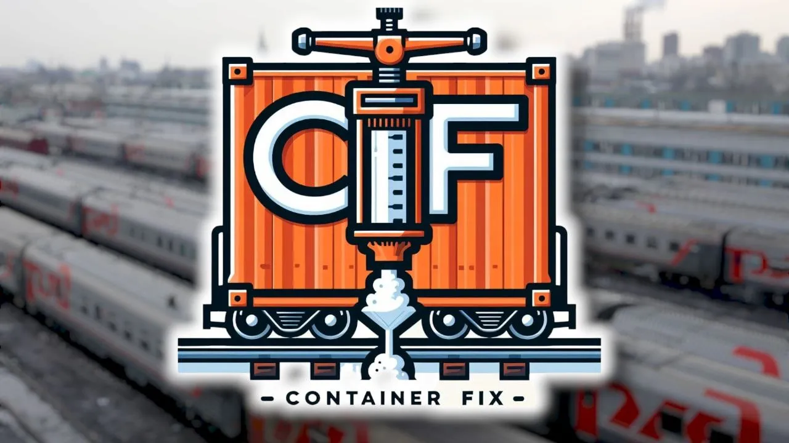

Novosibirsk Industrial Logistics · 2024
The Container Fix logo was created for a Russian Novosibirsk-based company developing a device that accelerates container loading into gondola cars by reducing manual labor. Its layered, cube-like design represents both the container and the gondola, while the bold “CF” anchors the brand’s identity. The contrasting colors and exposed cross-section underscore the system’s unique two-component material, which fills the gap between container and car for an elastic, efficient fit.

Container Fix · Master mark

This screenshot shows the official Skolkovo Innovation Center profile for Container Fix, a high-tech industrial startup founded in 2024.
Platform: This is an official government-backed registry for “Residents” (vetted tech companies) within Russia’s primary innovation hub.
Context: The page validates the company’s status as a member of both the Novosibirsk Innovation Fund and Skolkovo, granting them elite status in the tech manufacturing sector.
Design highlight: The logo (featured in the bottom left and on the 3D product render) was designed to reflect the company’s focus on modularity and industrial precision, aligning with their mission to innovate in containerized solutions and hardware fixing systems.

Railway-focused concept · Not selected
This alternative Container Fix concept combines a stylized container with a clamp-like mechanism and rail elements to emphasize the brand’s railway focus and mechanical innovation. The design nods to RZD (ОАО «РЖД»), Russian railroading, in the background—tying the identity to the real-world context of gondola and freight transport.
The bold “CF” lettering is integrated into the container’s form, visually conveying strength and efficiency. While it clearly highlights the core idea of securing containers during transport, this direction was ultimately not selected for the final brand identity.